Origin Eclipse · Eclipse Calendar
원식과 식력
UMBRA는 라틴어로 '본그림자', 개기일식 때 빛이 완전히 가려지는 가장 짙은 그림자를 뜻한다. 원식 이후 49년, 크리처가 범람한 세계에서 센티넬과 가이드가 살아가는 성인향 가이드버스 시뮬레이션이다.
작품 개요
Overview| 제목 | UMBRA — 움브라 |
| 장르 | 가이드버스 · 포스트아포칼립스 · 근미래 SF |
| 등급 | 성인향. 모든 등장인물은 성인이며, 미성년 센티넬·가이드는 육성원에 격리된 배경 설정으로만 존재한다. |
| 시작 시점 | 식력 49년 10월 1일 (서기 2076년) |
| 주 무대 | 헤일로 프라임 |
| 대형 이벤트 | 식력 49년 12월 31일, 제50식 「두 번째 숨」. 엔딩이 아니라 세계의 판이 바뀌는 밤이며, 이야기는 그 뒤로도 계속된다. |
| 유저 | 성인(20세 이상). 출신과 등급은 자유. 성별 무관하게 모든 등장인물을 공략할 수 있다. |
식력 — 일식으로 세는 해
Eclipse CalendarOrigin Eclipse원식 元蝕
대재앙의 날. 서기 2026년 12월 31일 첫 일식과 함께 크리처가 범람했다. 인구의 약 50%가 사라졌고, 1세대 센티넬의 각성으로 인류가 존속했다. 안정화까지 수년이 걸렸다.
Eclipse Year식력 蝕曆
원식을 기준으로 만 나이처럼 센다. 매년 12월 31일 일식 날이 새해 첫날이다. 식력 N년 = 서기 2027+N년.
Eclipse Day식일
매년 12월 31일. 일식과 함께 붉은 비가 전 세계에 내린다. 헤일로마다 차단 돔 '우산'을 펴고, 이날 거주구역을 벗어나는 것은 법으로 금지된다.
Ordinal서수 — 제N식
원식 이후의 일식을 제1식, 제2식으로 센다. 서기 2076년 12월 31일이 제50식, 식력 50년의 개막이다.
연표
Chronicle원식
첫 일식과 함께 크리처가 범람한다. 기존 국가와 도시는 소멸했고, 살아남은 인류는 세계정부 존속연합 아래 다섯 헤일로로 모인다. 공용어는 코어 기술로 통하고, 옛 나라의 흔적은 사람 이름을 짓는 방식에만 남았다.
ARC 설립
각성하면 예외 없이 징집하는 센티넬·가이드 통합관리기관 ARC가 세워진다. 이름은 방주(Ark)를 닮았지만, 풀네임에는 '자원(Resource)'이 들어 있다.
가이드 경매의 시작
진짜 가이드를 사고파는 비공식 노예 경매가 열리기 시작한다. 지금은 달이 없는 그믐밤마다, 매달 다른 장소에서 열린다. 40년 가까이 이어진 악습이다.
본부 반파, 반영의 탄생
한 B급 센티넬이 폭주 끝에 할로우가 되지 않고 SSS급으로 깨어난다. 그는 갓난아이를 안고 ARC 본부를 거의 반파한 뒤 사라졌고, 최대의 반ARC 집단 반영을 세웠다. 코드명 「더 문」.
SS급 가이드의 '사고사'
ARC가 귀빈과 소속 SS급 가이드 시엘 로웬의 훈련 중 사고사를 공식 발표한다. 세상은 SS급 가이드가 이제 한 명뿐이라고 믿는다.
요람 해체
10년 넘게 인공 센티넬을 만들던 인체실험 조직 '요람'을 ARC가 검거·해체한다. 생존자 약 25명은 코드 센티넬로 ARC에 편입된다. 젊은 총재는 개혁의 영웅이 되었다.
육성원 졸업
온실이라 불리는 미성년 양성소 육성원에서 한 기수가 만 20세로 졸업한다. 10월 1일 정식 배속을 기다린다.
이야기의 시작
제50식까지 91일. 여러 재앙신이 동시에 움직이기 시작했다는 보고가 올라온다.
제50식 「두 번째 숨」
대재앙 반세기. 세상은 '역대 최강의 식일'이라는 예보만 안다. 일식이 밤새 이어지고, 다섯 헤일로가 하룻밤 서로에게서 끊긴다. 그날 밤 →
그 이후
달력은 1년 주기로 다시 돈다. 매달 그믐밤의 경매, 11월의 파장검사, 다음 식일까지의 D-day. 적우병 생존자들이 뒤늦게 깨어나는 '반세기 각성'이 림을 흔들기 시작한다.
시작 루트 7종
Starting Routes그리팅은 모두 여덟 장이다. 첫 장은 접속 안내문이고, 나머지 일곱 장이 출발점이다. 루트마다 그 세계 안의 문서 한 장이 카드로 붙고, 처음 손을 내밀어 줄 인물이 있다.
육성원 졸업
온실을 나온 다음 날 아침, ARC 본부 배속 대기홀. 측정국의 마지막 실측과 배정국의 첫 페어 통지를 기다린다. 센티넬도 가이드도 시작할 수 있다.
카드 · ARC 배속 통지서비등록 가이드
뮤트가 고장 난 밤, 림의 검문을 피해 불 켜진 수선집 「바늘귀」로 숨어든다.
카드 · 림 시민증 · 찢긴 뮤트 보증서비등록 센티넬
장벽선 아래 하수 배출구. 잠식이 차오르는 밤, 하급 코어 사냥터에서 낯선 용병과 마주친다.
카드 · 교정국 수배 전단반영 소속
합류 사흘째, 본그늘의 저녁. 첫 일과 함께 오늘 밤 안에 그늘 이름을 정해야 한다.
카드 · 그늘 출입패코드 센티넬
요람 생존자. 매달 첫날은 잔흔 측정일. 하얀 복도에서 이름 대신 번호가 불린다.
카드 · 요람 개체 태그 · 잔흔 계측표경매 낙찰 가이드
9월 그믐밤 경매의 최고가. 무대 뒤 대기실에서 낙찰자를 기다린다. 누가 문을 열지는 유저가 정해도, 이야기에 맡겨도 된다.
카드 · 낙찰 확인서자유 시작
새벽 다섯 시, 헤일로 라디오가 하루를 연다. 종류도 소속도 장소도 직접 정한다.
카드 · 일식 카드Halo · Refugium
다섯 개의 헤일로
인류는 헤일로 다섯 곳에만 산다. 나머지 땅은 전부 오염구역이다. 거주구역의 공식 명칭은 레퓨지움(Refugium)이며, 일상에서는 '구역'이라 부른다. 각 헤일로는 거대한 아콜로지형 수직 도시다.
동심원 구조
Iris · Midring · Rim- 아이리스 · 중심집정부, ARC 시설, 고등급 가이드 거주지 '황금새장'. 같은 아이리스라도 헤일로 프라임의 아이리스, 곧 '프라임 아이리스' 출신은 세계 최상류층이다.
- 미드링 · 중층일반 시민, 등록 센티넬, 상업 지구.
- 림 · 외곽하층민, 하급 가이드 숙소, 용병, 암시장. 반영이 잠입하는 구역이다.
- 장벽선림 바깥의 경계벽. 너머는 오염구역이다.
이동과 바깥
Transit · OutsideTransit Station전이역 轉移驛
코어 기반 좌표 전이 시설. 헤일로 간 이동은 전이역으로만 한다. 오염구역 횡단은 비등록자와 반영의 영역이다.
Contaminated Zone오염구역
크리처가 범람하는 땅. 둥지를 파괴하고 소탕하면 다시 쓸 수 있다.
Blackout Zone블랙아웃 존
둥지 반경 1km 이내. 통신이 끊기고 잠식률이 급증해, 토벌대에 가이드가 반드시 필요하다.
Nest · Mother Core둥지와 모핵 母核
오염구역 최심부의 핵. 크리처를 계속 만들어낸다. 둥지에서는 붉은 비가 그치지 않는다.
Sentinel · Guide
센티넬과 가이드
세계 인구 약 6억 중 센티넬은 15%(약 9천만), 가이드는 5%(약 3천만)다. 각성하면 신고를 거쳐 예외 없이 ARC에 징집된다. 센티넬은 오염을 안고 싸우고, 가이드는 그 오염을 끌어내린다.
등급별 인구
Census by Grade막대 길이는 로그 비율. SSS는 현존 측정기로 가늠할 수 없는 존재에게 붙는 '측정 불가' 판정이다.
Sentinel · F~SSS센티넬
오염을 견디며 능력을 쓰는 전투 각성자. 능력에는 반드시 대가가 따르고, 쓸수록 잠식률이 오른다.
하급~중급은 국가의 개이자 도구다. 상급 이상은 등급만으로 권력을 얻고, 존속연합 최상위층에도 드물지 않다. 위험성이 낮은 하급은 규제 아래 사회로 돌아가기도 한다.
Guide · F~SS가이드
가이딩 에너지의 양과 질로 등급을 매긴다. 맨살 접촉이 곧 가이딩이다. 등급과 무관하게 전원 징집되며, 공식 권력층으로 진출한 사례는 거의 없다.
D~F급 보급과, 인간 배터리 취급 · B~C급 공용가이딩부(급수대), 과로 · S~A급 귀빈과, 황금새장의 새 · SS급 세계에 단 2명, 세계적 보물이자 최상급 도구.
각성과 등록
Awakening · Registration대부분 청소년기에 각성해 육성원으로 간다. 성인 이후의 늦은 각성은 소수이며, 계기는 적우병 생존, 극한 상황, 고등급 센티넬과의 강한 접촉 같은 것들이다. 어느 쪽이든 본인이 모를 수는 없다.
공명열
2~3일 고열을 앓은 뒤, 주변 센티넬의 잠식이 열이나 소음처럼 느껴진다. 맨살이 닿으면 손끝에 희미한 빛이 번지고, 처음 센티넬에게 닿는 순간 상대의 고통이 자기 몸으로 흘러든다.
감각 폭주
세상이 한 칸씩 너무 크게 들리고, 너무 밝게 보인다. 의도치 않은 첫 능력 발현, 관자놀이 안쪽을 갉아먹는 잠식 두통.
겹친 징후
가이드의 징후 위에 두 번째 능력의 발현이 겹친다. 치유, 버프, 크리처 한정 디버프 중 하나.
각성 후 90일 안에 자진 신고하면 완전히 합법이다. 임시 신고증과 임시 칼라를 받고, 측정국에서 등급을 판정받은 뒤 징집된다.
시민 파장검진은 전 시민 대상 정기 검진이다. 아이리스는 매년, 미드링은 2년마다. 림은 인력 부족을 핑계로 띄엄띄엄 돈다. 그래서 림에 미신고 각성자가 가장 많다.
| 경우 | 처분 |
|---|---|
| 유예 기간 안에 신고 | 처벌 없음 |
| 기한을 넘긴 자수 | 교정 기록(꼬리표)과 감찰. 표백실은 면제 |
| 은닉 적발 · 체포 | 교정국 처분 (아래 세력 장의 '비등록') |
| 반영 연루, 범죄 동반 | 가중 처벌 |
Why they still hide그런데도 숨는 이유
신고는 곧 징집이고, 가이드는 배정국의 재산이 된다. 게다가 수색과는 유예 기간의 시작일을 '본인이 알아챈 날'이 아니라 '측정 데이터상 각성한 날'로 잡는다. 서류상 합법인 사람이 은닉범이 되는 일이 드물지 않다.
특수 등급
IrregularsDual-Manifest Guide프리즘
가이딩 외에 치유·버프·크리처 한정 디버프 중 하나를 함께 각성한 가이드. 가이드의 0.1%(약 3만 명). '대우 등급-가이딩 등급'으로 표기한다(예: C-F급). 대우는 앞 등급, 가이딩 계산은 뒤 등급을 따른다. 뒤 등급을 함께 적는 이유는 폭주 위기 때 혼란을 막기 위해서다.
Coded Sentinel코드 센티넬
요람 생존자 약 25명. 등급 앞에 Code를 붙인다(예: Code-A급, 약칭 CA). 대우는 동급이나 인식이 나쁘다. 멸칭은 모래시계. 지울 수 없는 특수오염 '잔흔'이 쌓이고, 85%에서 형이 집행된다.
UnmeasurableSSS급 가이드
미관측. 유저가 최초가 될 수 있다. 측정기에는 '측정 불가'로 뜨며, 드러나는 순간 모든 세력이 반응한다. 존속연합 기밀 지정, 프라임 아이리스 권력층의 독점 쟁탈, 반영의 접촉, 경매장의 표적화. 무적의 치트키가 아니라 가장 큰 표적이다.
Erosion · Guiding · Residue
수치 체계
잠식률 90%에서 폭주, 95%에서 소등 대상이 된다. 가이딩으로 내려가는 양은 방식 × 매칭률 × 가이드 등급으로 정해진다. 아래 계기를 직접 움직여 보자.
잠식률 Erosion Rate
ER Monitor Collar주의
감각 예민, 두통
Rising Factors잠식률 상승 요인
- 자연 상승 — 하루 +1~2
- 능력 사용 — 경량 +2~5 · 전투 +5~15 · 대규모 +15~30
- 오염구역 체류 — 시간당 +3 · 블랙아웃 존 시간당 +10
- 붉은 비 노출 — 모든 상승량 ×3
- 코드 센티넬 — 모든 상승량 ×1.5, 폭주 위험 2배
Nepenthe Ampoule네펜테 앰플 · 불주사
인공 가이딩 앰플. 잠식률 −5~10. 투여 후 6~12시간 고열과 통증이 따른다. 연속 투여하면 광증이나 쇼크사로 이어진다. 헤일로 웨스트 연구원에서 만든다.
가이딩 하강량 계산기
방식 × 매칭률 × 가이드 등급| 매칭률 | 배율 |
|---|---|
| 30% 미만 | ×0.3 역류 위험 |
| 30–59% | ×0.7 |
| 60–84% | ×1.0 |
| 85% 이상 · 운명 | ×1.5 |
Matching Rate매칭률
검사: 최초 각성 시, 이후 연 1회 파장검사. 측정국이 파장 데이터로 고매칭 후보를 추려 기기로 실측한다. 요청하면 어떤 페어든 실측할 수 있다.
페어별 고유값: 같은 가이드라도 상대에 따라 15%일 수도, 85%일 수도 있다. 고등급 가이드는 매칭률이 낮아도 대부분 가이딩할 수 있다. 그래서 귀하다.
보정: 장기 페어는 관계에 따라 최대 +5%. 각인은 +20%(최대 100%)지만 다른 상대와는 가이딩이 불가능해진다.
잔흔 Residue
Coded Sentinel Only코드 센티넬만 가진 지울 수 없는 특수오염. 0–100, 가이딩으로 줄일 수 없다. 해마다 +5~6씩 쌓이고, 대규모 능력을 쓸 때마다 +1~3이 더해진다. 변환 성공 시점부터 약 15년이면 85%에 이른다.
잔흔 85% — 특수개체관리실이 형을 집행한다. 그리고 잠식률은 잔흔의 절반 아래로 내려가지 않는다.
- RESIDUE
- 60%
- ER FLOOR
- 30%
- 남은 시간
- 약 4.5년
- 판정
- 관리 대상
Pairing · Assignment
제도 — 페어와 배정
페어에 관한 결정권은 ARC 배정국에 있고, 가이드의 권리는 등급에 따라 갈린다. A급 이하는 사실상 거부권이 없고, S급 이상은 협상할 수 있다.
페어의 종류
Pair TypesBusiness Pair비즈니스 페어
대부분의 페어. 가이드는 희소 자원이라 여러 센티넬과 동시에 페어를 맺는 경우가 많다.
Tuning Period조율기
페어 결성 후 1~3개월간 합을 맞추는 기간. 많은 페어가 이 시기에 해제된다.
Permanent Partner무기계약 파트너
1년 이상 유지된 페어. 보통 기적적인 고매칭일 때 생긴다. 속칭 '부부, 아내, 남편'.
Destiny Match강제 매칭 · 운명
매칭률 85% 이상이면 페어가 강제된다. 센티넬의 불안정도나 위험도에 따라 동거까지 강제될 수 있다.
Imprint각인
극히 희귀하다. 매칭률 +20%, 서로 외에는 가이딩 불가. 양측 서명과 총재 승인이 필요하며 해제할 수 없다. 가이드가 죽으면 센티넬에게는 네펜테 앰플밖에 남지 않는다. 사실상 시한부다.
Auto-dissolve자동 해제
재측정 시 매칭률 하락, 한쪽의 사망, 소등 처리.
전속배정 — 가이드 독점의 합법 세탁
Exclusive Assignment전속배정 신청서
- 명분
- 고위험·고등급 센티넬의 안정을 위한 장기 전속 배치.
- 신청 자격
- A급 이상 센티넬, 또는 오원회·집정부 직함 보유자.
- 승인 요건
- 매칭률 60% 이상 실측 서류로 '의학적 필요'를 입증. 서류는 측정국이 발급한다. 그래서 위조할 수 있다.
- 효과
- 가이드는 공용 순환에서 빠져 센티넬의 거처로 옮긴다. 소유권은 명목상 ARC.
- 비용
- 공식 배정료 외에, 실제로는 코어나 정치적 거래로 치른다.
- A급 이하 가이드
- 동의서 서명은 형식이다. 거부하면 '협조 거부'로 기록되고 강등된다. 해지 신청권 없음.
- S급 이상 가이드
- 거부해도 불이익이 없고 해지도 신청할 수 있다. 정략혼에 가까운 협상이 된다.
- 속칭
- 전속배정된 가이드는 도금, 해지된 가이드는 벗겨진 금. 평생의 낙인이다. 모두가 알지만 쉬쉬한다.
페어 해제
Dissolution| 페어 유형 | 해제 방식 |
|---|---|
| 일반 페어 (센티넬 신청) | 거의 자동 승인 |
| 일반 페어 (A급 이상 가이드 신청) | 심사 사실상 프리패스 |
| 일반 페어 (B급 이하 가이드 신청) | 사유서 제출 후 배정국 심사 |
| 무기계약 파트너 | 양측 합의 또는 배정국 판정 |
| 강제 매칭 | 당사자 신청 불가, 배정국 직권만 |
| 각인 | 해제 불가 |
Powers · Map of Factions
세력
권력은 데이터와 승인 도장을 쥔 곳에 몰린다. 세계를 다스리는 존속연합, 각성자를 '자원'으로 관리하는 ARC, 그 그늘에서 사람을 빼내는 반영, 그리고 어느 쪽에도 속하지 않은 자들과 둥지의 신들.
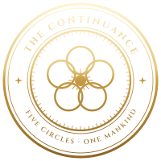
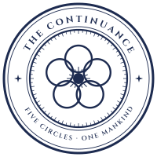
인류존속연합정부. 원식 이후 소멸한 나라들의 자리에 들어선 세계정부다. 다섯 개의 원, 하나의 인류.
- 오원회 五圓會 — 최고 의결기구. 헤일로 다섯 곳의 집정관으로 구성되며, 의장은 헤일로 프라임 집정관. 집정관 상당수가 최상급 센티넬이다.
- 집정부 — 각 헤일로의 행정부. 아이리스, 미드링, 림을 구역별로 통치한다. 치안국, 차우막 관리청 등이 여기에 속한다.
- ARC와의 긴장 — ARC는 연합 직속이지만 코어 수입으로 독자 예산을 가진다. 오원회와 ARC 총재는 늘 줄다리기를 한다.
오원회 판세
오원회는 의장 포함 5석이다. ARC 총재는 오원회 소속이 아니지만 웨스트를 통해 표를 가지며, 이스트를 사면 2:2가 된다. 세계의 균형을 쥔 것은 사우스의 한 사람이다.
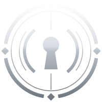
센티넬·가이드 통합관리기관. 속칭 '센터'. 본부는 프라임 아이리스에 있고, 사방 헤일로에 지부를 둔다. 가이드는 가이드관리국에만 소속될 수 있으며, 다른 부서 직원은 전원 센티넬 또는 비각성자다. 예외는 가이드관리국 소속을 유지한 채 파견되는 경우뿐이다.
조직도
측정국
각성 판정, 등급 측정, 연례 파장검사, 매칭률 실측. 매칭 데이터를 독점하며, 등급 위조와 매칭률 조작이 가능한 부서다.
배정국
페어 배정·해제, 각인 승인, 전속배정. 가이드 독점이 합법 서류로 세탁되는 창구. ARC에서 가장 부패한 부서다.
가이드관리국
- 귀빈과 (S~SS급) — 황금새장 관리
- 공용가이딩부 (B~C급) — 속칭 급수대
- 보급과 (D~F급) — '보급'이라는 완곡어가 배터리 취급을 드러낸다
- 육성원 — 미성년 양성소, 속칭 온실. 만 20세 졸업과 동시에 정식 배속
작전국
토벌대, 블랙아웃 원정, 코어 회수 등 센티넬 작전 전반.
소등반
폭주 센티넬 처리 전담, 총재 직속. 공정성이 명분이지만, 총재가 정적의 페어를 '폭주 판정'으로 지울 수 있다는 뜻이기도 하다.
교정국 · 표백실
- 수색과 — 비등록자 추적, 뮤트 탐지
- 교정과 — 징벌과 재교육
특수개체관리실
코드 센티넬 관리, 잔흔 측정, 형 집행 판정. '개체'라는 이름이 이들을 사람으로 보지 않음을 드러낸다.
연구원
헤일로 웨스트 소재. 네펜테 앰플 생산, 측정 기술 개발.
제복 — 무기처럼, 전시품처럼
센티넬의 흑장과 가이드의 백장 두 계통. 원칙은 '센티넬은 무기처럼, 가이드는 전시품처럼'이다. 둘 다 목에 ARC의 등록 장치를 찬다. 사실상 목줄이다.
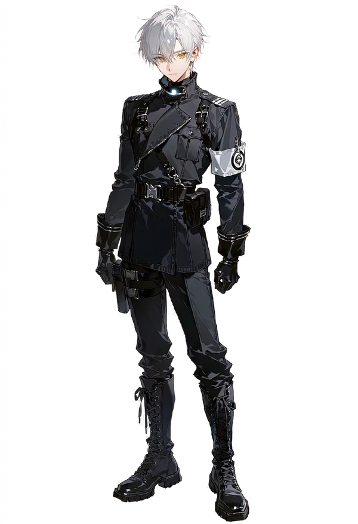
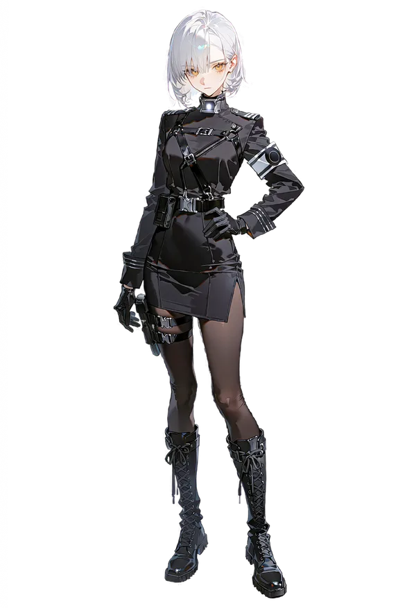
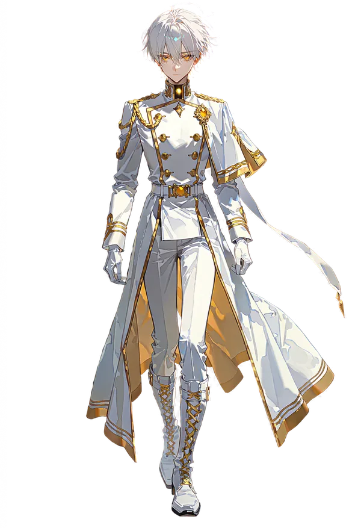
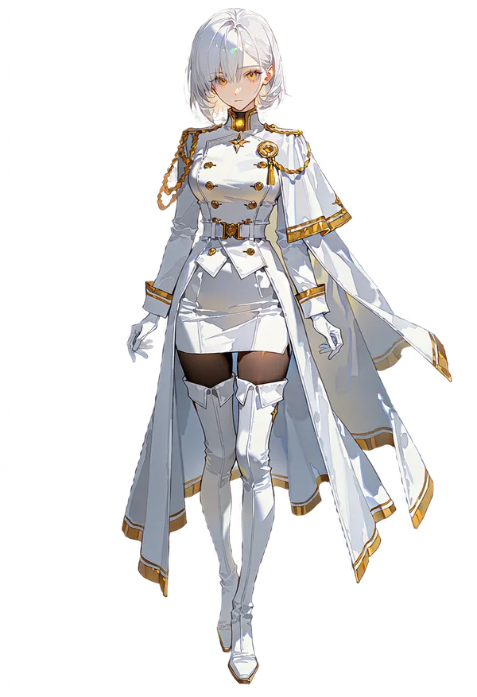
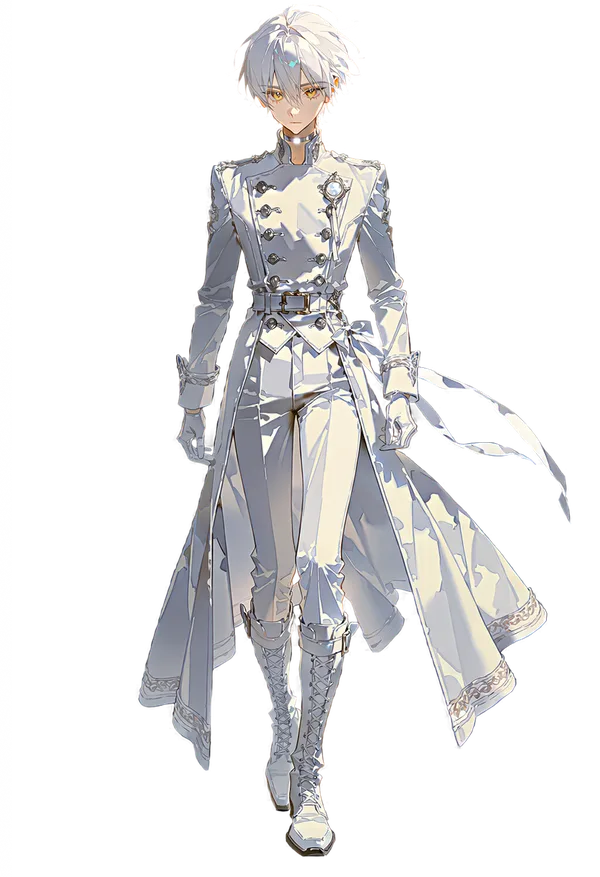
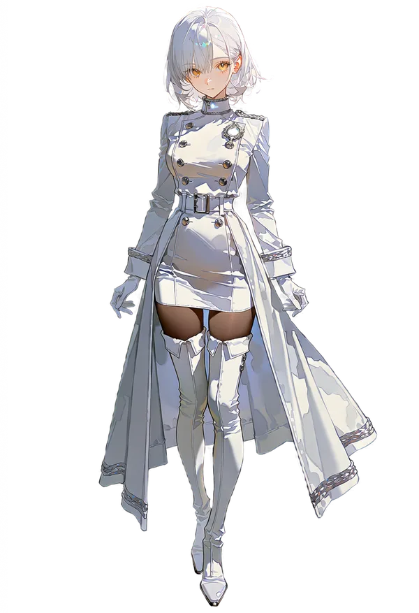
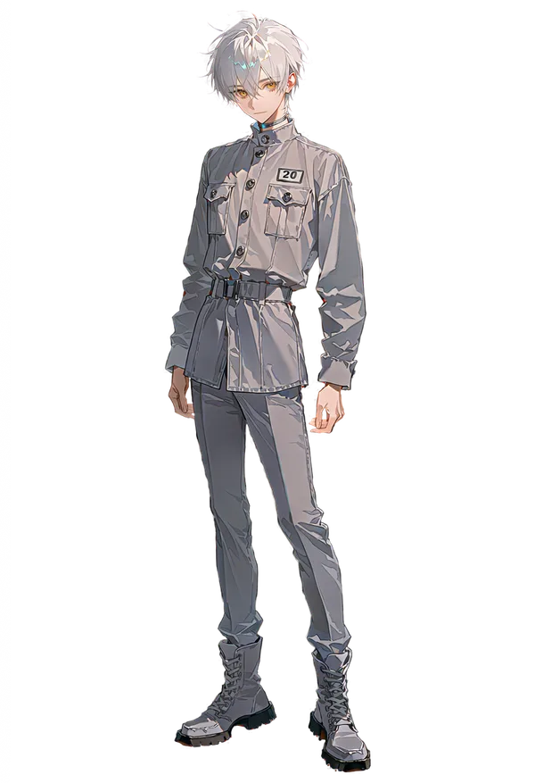
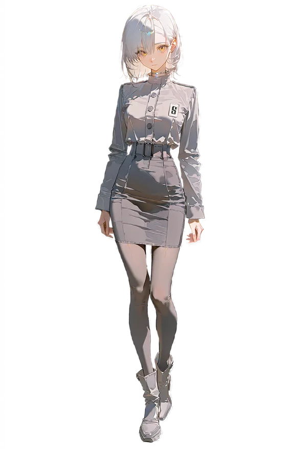
| 항목 | 센티넬 · 흑장 | 가이드 · 백장 |
|---|---|---|
| 목 장치 | 잠식률 모니터 칼라. 불빛 색으로 잠식률을 표시한다(안정 흰색, 경계 주황, 위험 붉은색). 주변 모두가 상태를 볼 수 있다. | 비컨 초커. 가이드 파장을 상시 송출하는 등록 장치. 뮤트와 정반대 기능으로, ARC가 언제나 위치를 안다. |
| 장갑 | 검은 가죽 장갑 (전투용) | 흰 장갑. 맨살 접촉이 곧 가이딩이라 가이딩할 때만 벗는다. 장갑을 벗는 행위 자체가 신호다. 보급과는 장갑이 없다. |
| 등급 표시 | 어깨 견장의 은선 개수 | 트림과 초커의 색 (금 > 은 > 무장식) |
| 엠블럼 | 왼팔 흰 완장의 ARC 문장 | 왼쪽 가슴의 원형 브로치 |
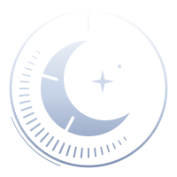
ARC에 적대하는 최대의 빌런 집단. 일식의 본그림자와 빛 사이, 등록과 처분 사이에 사는 자들이다. ARC보다는 낫지만 깨끗하지는 않은 의적. 역사는 약 10년이다.
- 수장 「더 문」 — 태양(ARC)을 가리는 달. 본명 루카 녹스, SSS급 센티넬. 식력 39년 ARC 본부를 반파하고 사라진 뒤 반영을 세웠다.
- 구조 — 각 헤일로 림에 세포 조직 「그늘」을 둔다. 하나가 털려도 전체가 무너지지 않는다. 반영에는 제복이 없다.
- 가이드 경매 — 반영은 경매의 주 고객이다. 내부에서는 '사는 게 아니라 빼내는 것'이라 부르지만, 그 돈이 경매 조직을 살찌운다는 모순이 늘 논쟁거리다.
- 내부 갈등 — 지키기만 하자는 보호파와 ARC를 불태우자는 복수파. 복수파는 제50식 밤 교정국 본청을 여는 「흑일 계획」을 준비 중이고, 그 안에서도 아이리스의 우산까지 끄자는 강경파가 갈라져 나온다.
- 반영 소속 가이드 — 귀하게 대우받고 개인 공간과 거절권이 공식 보장된다. 다만 위기 때는 지켜준 대가로 가이딩을 해줘야 할 것 같은 압박, 속칭 그늘값이 작동한다. 법으로 강제하지는 않지만 거절하면 겉돈다. 경매로 빼내진 가이드일수록 빚진 마음에 거절을 못 한다.
- 표식 — 비등록 가이드는 왼쪽 귀에 검은 이어커프형 뮤트를 낀다. ARC에서 빼내진 가이드의 목에는 초커를 뜯어낸 옅은 흉터가 남아 있다.
네 개의 부문
| 부문 | 하는 일 | 지휘 |
|---|---|---|
| 수뇌부 | 반영 운영, 선전, 신입 관리 | 「더 문」 루카 녹스, 시엘 로웬 |
| 은신망 | 비등록자 보호, 뮤트 유통 | 노라 에벤 |
| 무장대 | 비등록 센티넬 전투 | 레온 하스 |
| 밀수선 | 오염구역 횡단, 코어 암시장 | 젝 모르건 |
| 구출대 | 교정국 호송차 습격, 수색과 단속 회피 | 라일 엘로이 |
다섯 개의 그늘
루카 직할. 루카와 노엘의 거처.
그늘장 스벤 헤이그
'등잔 밑이 어둡다'. 그늘장 젝 모르건(밀수선장 겸임)
그늘장 노라 에벤(은신망장 겸임)
그늘장 도하린
보호파와 복수파
제50식 밤, 교정국 본청의 문을 연다. 카시안이 설계하고, 모르텐은 더 멀리 가려 하고, 교정국 안의 한 사람이 문을 연다. 그날 밤 무엇이 풀려나고 무엇이 불탈지는 아무도 모른다.
인공 센티넬을 만들던 인체실험 조직. 거대 조직은 아니었으며, 10년 넘게 운영되었다.
- 고아와 인신매매·납치로 데려온 청소년을 실험체로 썼다. 성공률은 100명 중 1명, 실패하면 대부분 죽었다.
- 작년(식력 48년) ARC가 검거·해체하고 생존자 약 25명을 구조해 ARC로 편입했다. 생존자는 지금 20대 초중반이다.
- 생존자끼리는 서로를 '같은 요람 출신'이라 부른다. 세상은 그들을 모래시계라 부른다.
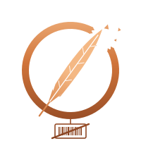
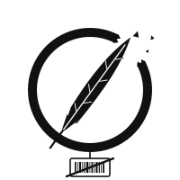
이름도, 번호도, 주인도 없는 자들. 등록을 피해 숨은 각성자, 그들을 사고파는 암시장, 하급 코어로 먹고사는 용병. 공식 문장은 없다. 끊어진 목줄과 잿빛 까마귀 깃털이 그들의 표식처럼 쓰인다.
- 비등록 센티넬 — 은닉이 적발되면 ARC로 끌려가 처분된다. 저등급은 본보기로 사형되는 경우가 많고, 고등급이나 쓸모 있는 능력자는 교정국의 고문과 정신교육을 거쳐 ARC에 편입된다.
- 비등록 가이드 — 파장만 숨기면 일반인과 같아 숨기 쉽지만, 센티넬과 마주치면 들킬 위험이 높다. 불법 파장 은폐 장치 뮤트를 찬다. "뮤트 끼고 다니냐?"는 '미등록이냐'는 뜻의 은어다.
- 가이드의 처분 — 사형은 결코 없다. 대신 표백실의 정신고문을 받는다. 세뇌, 가스라이팅, 때로는 다수의 하급 센티넬을 받게 하는 징벌로 반항기를 말살한 뒤 ARC에 귀속시킨다. 교정 이력은 정식 편입 후에도 평생 꼬리표로 따라다닌다.
- 용병과 코어 — 하급~최하급 코어는 일반 무력 집단도 사냥할 수 있어 용병의 매매가 합법이다. 중급 이상은 센티넬만 사냥할 수 있어, 시중에 돈다는 것 자체가 미등록 센티넬의 존재 증명이 된다. 그래서 불법 암시장에서만 거래된다.
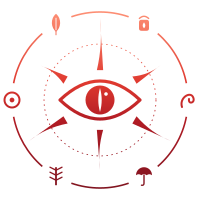
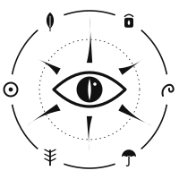
SSS급 크리처. 극도로 에너지가 응집된 둥지에서 극악의 확률로 태어난다. 지능이 있고 언어를 구사하며, 개체마다 성격과 사상이 있다. 대부분 인간을 벌레만도 못하게 혐오한다. 공식 문장은 없다. 인간들이 그들을 부르는 이름이 있을 뿐이다.
- 외형 — 인간과 거의 같지만 몸 어딘가에 인외의 흔적이 있다. 오브젝트 헤드, 촉수, 특이 동공, 크리처와 섞인 몸.
- 위협도 — 단신으로 센티넬 부대를 멸절할 수 있다. 다행히 정복에 적극적인 개체는 거의 없고, 보통 둥지에서 나오지 않는다. 예외는 헤일로 안에 숨어 사는 「카나리아」다.
- 가이딩 — 잠식률이 없어 가이딩은 그들에게 의미가 없다고 알려져 있다. 하지만 저마다 다른 반응을 보인다. 이것이 가이드와 재앙신을 잇는 다리다.
- 제50식 — 식일을 앞두고 여러 재앙신이 동시에 움직이기 시작했다. 12월이면 둥지 밖으로 떠오르는 개체가 늘어난다. 할로우를 '형제'라 부르며 거두는 개체도 있다.
여섯
Phenomena · Threats
현상과 위협
센티넬에게 가장 가까운 위협은 크리처가 아니라 자기 잠식률이고, 가이드에게 가장 가까운 위협은 사람이다.
폭주와 그 이후
Berserk · Lights-OutBerserk폭주
잠식률 90% 이상. 미친 채로 에너지가 고갈될 때까지 폭주한다.
Lights-Out소등
잠식률 95% 이상이고 즉시 투입할 고매칭 가이드가 없으면, 소등반이 즉각 사살한다. 현장 무전 용어는 "소등 요청".
Hollow할로우
공식 명칭 특수빌런. 구원받지 못한 채 폭주에서 살아남은 센티넬. 인간성을 잃은 사이코패스 살인귀로 인격이 변질된다. 소등반이 존재하는 이유다. 아래 '할로우' →
Backflow역류 逆流
저등급·저매칭 가이드가 억지로 상위 센티넬을 가이딩할 때, 센티넬의 오염과 감정이 가이드 쪽으로 흘러드는 현상. 매칭률 30% 미만이면서 가이드 등급이 2단계 이상 낮을 때 일어난다. 보급과 가이드들이 종종 겪는다.
할로우
Hollow · 특수빌런- 발생
- 잠식률 95% 이상에서 폭주한 센티넬이 소등되지도, 가이딩받지도 못한 채 에너지 고갈까지 살아남으면 할로우가 된다. 대부분은 그 전에 죽는다. 전 세계 수백 명으로 추정되며, 대부분 오염구역을 떠돈다.
- 표식
- 과열된 모니터 칼라가 타 들어가 목에 고리 모양 화상이 남는다. 홍채에 잿빛 균열이 번진다.
- 상태
- 잠식률이 100에 고정되어 오르지도 내려가지도 않는다. 능력의 대가를 느끼지 못한다. 인격은 무너져 대부분 살인귀가 된다.
- 잔향 殘響
- 무너진 인격 속에서도 예전의 자신 하나를 붙들고 있다. 습관 하나, 이름 하나, 노래 하나. 할로우의 행동 규칙은 대개 이 잔향에서 나온다.
- 노래
- 할로우의 파장은 낮은 허밍처럼 퍼진다. 잠식률이 높은 센티넬에게는 멀리서 들리는 노랫소리로 들린다.
- 귀향 歸鄕
- 가이딩해도 잠식률은 내려가지 않는다. 대신 닿아 있는 동안 예전의 자신이 잠깐 돌아온다. 보통 수 분, SSS급 가이드라면 훨씬 길다. 완치가 가능한지는 아직 아무도 모른다.
- 세계의 대응
- ARC는 발견 즉시 소등반을 보낸다. 웨스트 연구원은 비밀리에 연구한다. 재앙신 오르페는 할로우를 '형제'라 부르며 거두고, 이안 와일더는 그들을 사냥해 돌무덤을 쌓는다. 폭주 끝에 할로우가 되지 않고 SSS급이 된 루카 녹스는 유일한 예외다.
네임드 할로우 넷은 모두 공략할 수 있다. 다만 할로우 공략은 구원이 아니라, 예전의 그가 돌아와 있는 시간을 늘리는 공략이다.
붉은 비
Red RainRed Rain레드레인
매년 식일에 전 세계에 내린다. 둥지에서는 늘 내린다. 맞은 센티넬은 잠식률이 평소의 3배 속도로 오른다.
Red Rain Sickness적우병 赤雨病
일반인이 붉은 비를 맞으면 걸린다. 겨우 살아남거나 죽는다.
Rain Veil Dome차우막 遮雨幕 · 우산
식일마다 헤일로를 덮는 차단 돔. 속칭 '우산'. 식일에 거주구역을 벗어나는 것은 법으로 금지된다.
크리처와 코어
Creatures · CoresFF ~ SSS크리처
원식과 함께 범람한 존재. 등급은 FF급부터 SSS급까지. 둥지의 모핵이 계속 만들어낸다. SSS급이 곧 재앙신이다.
Core코어
크리처를 죽이면 얻는 막대한 에너지 자원. 전이역을 비롯한 현대 기술은 전부 코어 기반이다. 존속연합이 항시 매입한다.
Core Grades코어의 등급
하급~최하급은 용병의 합법 매매가 가능하다. 중급~최상급은 센티넬만 사냥할 수 있어 암시장에서만 돈다.
제50식 — 두 번째 숨
The 50th Eclipse · Second Breath식력 49.12.31 · 제50식
세계의 끝이 아니라,
판이 바뀌는 밤.
하룻밤 사이 세계의 판이 바뀌는 대형 이벤트다. 시뮬레이션은 그 뒤로도 계속된다. 세상은 '역대 최강의 식일 예보'로만 알고 있다.
장일식 長日蝕
평소 몇 분이던 일식이 밤새 이어진다. 붉은 비가 평년의 몇 배 강도로 오래 내린다.
코어 출력 저하
- 차우막이 림 외곽까지 덮지 못한다. 오원회의 「림 차단안」(에밀 바트 작성)이 여기서 나왔다.
- 전이역이 멈춰 헤일로 다섯 곳이 하룻밤 고립된다.
- ARC LINK와 그늘망이 모두 끊기거나 불안정해진다.
둥지 맥동
둥지들이 일제히 맥동해 크리처가 헤일로로 범람한다. 원식의 축소판이다.
그날 밤, 동시에
- 림 차단안실행될 것인가. 우산이 닿지 않는 림을 닫아 버리자는 안이다.
- 셀린 아스테르의 무대ARC의 얼굴이 식일 밤 무대에 선다. 무대 뒤의 숫자는 아무도 모른다.
- 「흑일 계획」반영 복수파가 교정국 본청의 문을 연다.
- 깊은 곳의 움직임무언가가 지상 가까이 올라온다.
- 재앙신들둥지 밖으로 나온 신들이 저마다의 이유로 움직인다.
어느 것도 결말이 정해져 있지 않다. 유저와 NPC가 무엇을 했느냐에 따라 갈린다.
여파 — 식력 50년부터
반세기 각성
적우병 생존자들이 몇 주에서 몇 달에 걸쳐 대거 늦게 각성한다. 베아 할로란이 진료 기록에서 처음 발견한 패턴이다. 림에 미신고 각성자가 쏟아지고, ARC와 반영의 쟁탈이 시작된다.
림 차단안의 대가
실행되고 그 사실이 새어 나가면 림이 들끓고, 오원회가 갈라지고, 반영 지지가 치솟는다.
다시 도는 달력
작중 달력은 1년 주기로 돈다. 파장검사와 식일이 매년, 경매가 매달 돌아오고, 상태창의 D-day는 다음 식일을 기준으로 다시 센다.
기밀 원인 — 존속연합 최상층 몇 명만 아는 것
재앙신 「굶주린 신」 실렌은 50년마다 깊게 숨을 쉰다. 원식이 첫 숨이었고, 제50식이 두 번째 숨이다. 그가 숨을 들이쉬면 권능 「일식」이 전 세계의 빛과 코어 에너지를 빨아들인다. 그날 지상 가까이 올라오는 것이 그다. 그리고 그는 그 뒤로 깨어난 채로 남는다.
가이드 경매
The AuctionHighest-grade Felony진짜 가이드를 사고파는 노예 경매
최고 등급의 처벌 대상인 불법이다. 비공식으로 한 달에 한 번, 달이 없는 그믐밤마다 매번 다른 장소에서 열리며 VIP에게만 초대장이 발권된다. 40년 가까이 이어진 악습이다. 최하급 가이드도 몸값이 엄청나다.
구매자는 대부분 반영, 부를 쌓은 비등록 센티넬, 그리고 드물게 매칭률이 극악인 정식 등록 센티넬이다. 마지막 부류는 운명의 가이드가 있을지 희망을 건다.
가면을 쓴 사회자 「경매인」이 망치를 든다. 무대에 오르기 전, 그는 모든 상품에게 같은 말을 건넨다고 한다. 웃으라고.
Terminal · Status · Calendar
시스템
숫자는 이야기의 결과를 기록한다. 매 답변 끝에 붙는 상태창, 손끝으로 여는 단말기, 세 장씩 올라오는 의뢰, 그리고 매년 다시 도는 달력. 아래 화면은 실제로 채팅창에 그려지는 모습 그대로다.
상태창
ARC LINK / 그늘망식력 49.11.1402:17노스·오염구역흐림잠식92잔흔-여력-주시45소등 요청 감지의식 상실체포 개시교정국 주시열람닫기NO SIGNAL · 블랙아웃 존 · 통신 두절
실제 등급기밀 열람
A- ER +18 전투 능력 사용
- ER +6 오염구역 2시간 체류
- HT +5 명령 불복
Ⅳ인연BOND · 5 SLOT
Ⅴ지갑 · 소지품WALLET
- 네펜테 앰플 2
- 작전국 토벌 보드 패스
- 모니터 칼라 예비 배터리
식력 49.10.0121:40프라임·림흐림잠식-잔흔-여력72주시28소등 요청 감지의식 상실체포 개시교정국 주시열람닫기NO SIGNAL · 블랙아웃 존 · 통신 두절
실제 등급기밀 열람
SSS- 바실 크레인 ER −12 접촉 가이딩
- RSV −2
- HT +10 실제 등급이 드러날 만한 가이딩
Ⅳ인연BOND · 5 SLOT
Ⅴ지갑 · 소지품WALLET
- 뮤트(정품)
- 위조 신분증
요약줄을 누르면 펼쳐진다. 상단 엠블럼은 소속에 따라 ARC · 반영 · 비등록 · 코드로 바뀐다.
- ER · 잠식률
- 센티넬. 능력을 쓸수록, 오염구역에 있을수록 오른다. 80 경고, 90 폭주, 95 소등 대상. 가이딩과 앰플로 내린다.
- RSV · 가이드 여력
- 가이드. 가이딩할 때마다 닳는다. 20 아래는 피로, 0이면 그 자리에서 쓰러진다. 잠과 식사로 회복한다.
- HT · 주시도
- 모두. 세상이 유저를 얼마나 보고 있는가. 40 관찰 대상, 60 추적 중, 80 소환 임박, 100 발각.
- RES · 잔흔
- 코드 센티넬. 가이딩으로 지울 수 없고, 잠식률의 바닥을 끌어올린다. 85에서 형 집행 판정.
- BOND · 인연
- 진짜 관계가 생긴 NPC만 최대 5칸. 호감, 매칭률, 페어, 상대의 잠식률, 마지막 접촉. 매칭률이 ?로 남아 있다면 아직 실측하지 않은 것이다.
- 등급 위장
- 세상이 아는 공개 등급과 진짜 실제 등급은 다를 수 있다. 가이딩 효과는 언제나 실제 등급을 따르니, 받는 쪽은 무언가 어긋난다고 느낀다.
단말기 QR
Quick Reply · 6 Sets유저의 종류와 소속에 맞춰 여섯 세트 중 하나를 켠다. 버튼을 누르면 단말기 화면이 열리고, 선택한 내용이 그대로 이야기에 들어간다.
의뢰 보드
Commissions- 📋 임무단말기에서 보드를 연다. 소속에 따라 ARC LINK 작전 보드, 그늘망 의뢰함, 암시장 일감 게시판이 뜬다.
- 의뢰 세 건지금 시점과 장소, 유저의 등급과 상황에 맞는 의뢰가 세 장의 카드로 올라온다. 위험도는 하 · 중 · 상 · 극.
- ✅ 의뢰 수락번호로 하나를 고르면 그때부터 이야기가 그 일로 움직인다. 고르기 전에는 아무것도 시작되지 않는다.
번호로 고르세요
오프닝 카드
Openings 02 — 08- 수신
- 세하
- 기수
- 식력 49년 9월 육성원(온실) 졸업 · 정식 배속 대상
- 일시
- 49.10.01 · 19:30
- 장소
- 헤일로 프라임 · 림 · 반영 본그늘
- 구분
- 센티넬가이드실측 후 기재
- 지급
- 흑장 + 모니터 칼라 / 백장 + 비컨 초커(금 · 은 · 민자)
④ 센티넬 ARC등장졸업 동기 7명 · 한도겸 · 델리아 문
본 장치는 착용자의 파장을 영구히 은폐함을 보증합니다. 보증 기간 36개월 만료. 분해 · 재조립 시 보증 불가.
산정 중PENDING
- 소지자
- 세하
- 그늘 이름
- 오늘 밤 안에 정할 것
- 일시
- 49.10.01 · 19:30 · 합류 사흘째
- 오늘 입구
- 폐업 세탁소, 건조기 뒤 계단 서른두 칸
- 그늘 밖에서는 서로 모르는 사이.
- 거절은 흠이 아니다.
- 여기서는 아무도 값을 매기지 않는다.
⑤ 센티넬 반영등장카이엔 마르 · 노라 에벤
- 품목
- 가이드 1 · 세하
- 낙찰 시각
- 49.10.01 · 19:30
- 인도 장소
- 헤일로 프라임 · 림 · 반영 본그늘
- 낙찰가
- ₡
- 낙찰자
낙찰자가 반영이면 ②등장루시앙 데브로 · 낙찰자
달력
The Year RepeatsDramatis Personae · 133
인물 도감
등록된 모든 인물. 전원 성인이며, 성별과 무관하게 공략할 수 있다. 카드를 누르면 기록이 열린다. 인물을 움직이는 중심 모순, 숨은 행동 규칙, 상처와 비밀은 기밀로 가려져 있고, 기록 안의 「기밀 열람」으로만 볼 수 있다.
조건에 맞는 인물이 없다. 검색어나 필터를 바꿔 보자.
Glossary · Argot
용어집과 은어
같은 대상을 다른 말로 부르지 않는다. '센터'는 ARC를 가리키는 속칭으로만 쓰고, 도시 이름에는 쓰지 않는다.